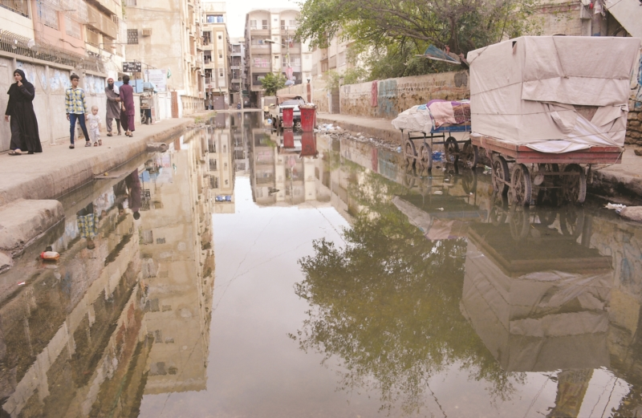

October 7, 2019
State of Garden East paints a terrible picture of neglect and decay
Access to health facilities, educational institutions and places of worship being hampered by already dilapidated roads swimming in sewage
© Naqeeb Ur Rehman
Standing at the gate of his apartment block, 30-something Sadiq* stares longingly at the motorcyclist sent by a ride-hailing service waiting for him on the opposite side of the street. Keeping to the farthest edge of the road, the driver has already brought his two-wheeler this far, but he seems unwilling to cross over to Sadiq’s side.
Separated by sewage entirely inundating the Shiv Ratan Street in the Garden East neighbourhood for several months now, Sadiq and whoever is assigned to take him to work find themselves in this exact scene almost every evening.
Meanwhile, on the high footpaths straddling the street on either side of the two men, people sidestep and step over stray dogs that have lost their territory to the wastewater to get to wherever they are headed to. The elderly find it quite difficult to climb up and down the footpaths, but they can’t access the road any more.
Sadiq finally gives up, as he has to almost every day, and gestures at the waiting man to meet him at the corner of the street. Countless people like him are forced to start and end their day in filth for the most part of the week.
As if the commute between home and work is not already plagued by the myriad potholes and pools of sewage that make unsuspecting victims of the people, the growing inertia and outright apathetic behaviour of the officials concerned has brought wastewater right to the people’s doorsteps.
Many residents of the Shiv Ratan Street echo these concerns. Anila, Rehana* and Sabeen, aged 22 to 26, have to argue with their ride-hailing service drivers over where to pick them up from, because no one likes to get their car dirty.
Danish*, Fareeha* and Zahida*, aged 12 to 15, also complained that their school van drivers refuse to pick them up from the gates of their apartment blocks, while Salman*, Tariq* and Yasir*, aged 11 and 12, have been punished several times for wearing dirty shoes to school.
Prakash* and Rahim*, aged 27 and 29, have been often humiliated by their bosses because their pant legs were stained. The list of people and the difficulties they have been facing because of official neglect goes on and on.
Sometimes during the daytime, the wastewater level recedes to reveal the road hidden beneath as well as the stepping stones placed near the footpaths. But this has its own set of challenges: one day a little girl on her way home after school slipped off one of these stones and fell face-first on the road thoroughly damp with sewage.
At the corner of the street, where Sadiq and his driver can finally meet, two sisters sell pakoras and other snacks. While their customers have to bear the uncomfortable situation for a few minutes, the vendors have to sit there and endure the stench as long as they’re working.
This is where the Shiv Ratan Street meets Nusserwanji Road, which leads to Karachi’s main Ismaili Jamatkhana on Britto Road. To get to the Jamatkhana, however, the Ismaili community has to endure an excruciating struggle because of all the wastewater along the way.
Travelling down Britto Road, on your second left you’ll find Gold Street, which leads to The Aga Khan Hospital for Women as well as its diagnostic centre located just opposite. This street has also had a frequent wastewater issue for several years.
Moving further down the road you’ll reach the point where it intersects with Pedro D’Souza Road. Turning left here you’ll find the Fatimid Foundation, Pakistan’s largest voluntary health care and blood transfusion service provider. And right in front of its gate you’ll find some more wastewater, a chronic problem that has persisted for the past couple of years.
This important intersection leads to the Fatima Bai Hospital in the north-east, the Fatimiyah Hospital in the south-south-east and the Aga Khan School in the south-west.
Before reaching the Aga Khan School, however, you’ll find three more educational institutions down this road — the St Lawrence’s Convent Girls’ School, the St Lawrence’s Boys’ School and the Blossoms Nursery School — and sewage hampers access to all of them.
The main gate of the Aga Khan School opens in the sewage-covered Flynn Street. Stepping out of the school and turning right on Dr Abro Road leads to more wastewater.
All the complaints forwarded by the locals to the relevant executive engineer (XEN) of the Karachi Water & Sewerage Board (KWSB), Aijaz, seem to have fallen on deaf ears.
Until August, the XEN at least received the phone calls of the residents, but after telling everyone that the sewage issue will be resolved within a fortnight or so, he has apparently disappeared off the face of the earth. The News also could not make contact with him or any other KWSB official.
Councillor Samir Qureshi of Union Committee-15 (Garden East) Ward-2 said: “As far as the indifference of the relevant authorities is concerned, even my colleagues’ and my recent news conference has made no difference. We have written more complaint letters again and are about to send them out, because we can’t sit silently by.
“The locals have elected us to solve their problems, so that’s what we’re trying to do, by taking action where possible, and where the situation is out of our hands, by repeatedly bringing the matter to the attention of those who have more power than us to help the people.
“Moreover, the month-long campaign to clean Karachi that was launched by the Sindh government on September 21 has done nothing in the areas within our purview. The overflowing sewers are still overflowing. Our repeated requests for freshwater connections also go unheard.
“The problem of the overflowing sewers can only be solved by laying new pipelines. The roads of and the sewerage lines passing through the Shiv Ratan Street, the diagnostic centre area, Lasbela and the Fatimid Foundation area are damaged beyond repair. No relevant official is paying any attention to them.
“Different localities in Garden East, including the areas surrounding the Jamatkhana, are showing obvious signs of apathy. Moreover, encroachments have been cropping up everywhere in the neighbourhood. We contacted the relevant deputy commissioner and assistant commissioner but all to no avail.
“With the roads flooded by sewage and the footpaths occupied by street vendors, the movement of the residents has been severely hampered. But no one seems to be capable of or even interested in doing anything about this.”
In a news conference at the Karachi Press Club on September 25, Qureshi had lamented that East District Municipal Corporation Chairman Moeed Anwar has been doing nothing for the neighbourhoods falling within the latter’s jurisdiction.
Leading the media talk held by current and former councillors of UC-15, UC-16 (Soldier Bazaar) and UC-17 (Pakistan Quarters), Qureshi said that despite being high tax-payers, the residents of the Garden East and Garden West neighbourhoods continue to be ignored by the relevant authorities.
He said that after being ignored by the Sindh and local government officials, the councillors sought help from philanthropists, who helped with the installation of street lights, the purchase of manhole covers and ring slabs, and the fumigation against flies and mosquitoes.
He accused the “political orphans” of the provincial administration and the KWSB of conspiring to create an artificial water shortage in their neighbourhoods. He claimed that the KWSB officials have been getting bribes as high as Rs200,000 for providing water connections to the deprived residential areas.
He also claimed that under the patronage of the Sindh government and the KWSB, the tanker mafia has been stealing hundreds of thousands of gallons of freshwater from their neighbourhoods to sell it to the factories in the SITE Area.
He lamented that all across the city, only councillors who had won the local government elections as independent candidates are being ignored, but all they wish to do is serve the people.
He asked where the budget allocated for their neighbourhoods has gone. He said files have been submitted to the higher authorities on the works carried out with the assistance of philanthropists, following which the funds that should have been handed over to them for those works have been misappropriated.
* Names have been changed to protect privacy
First published in The News International